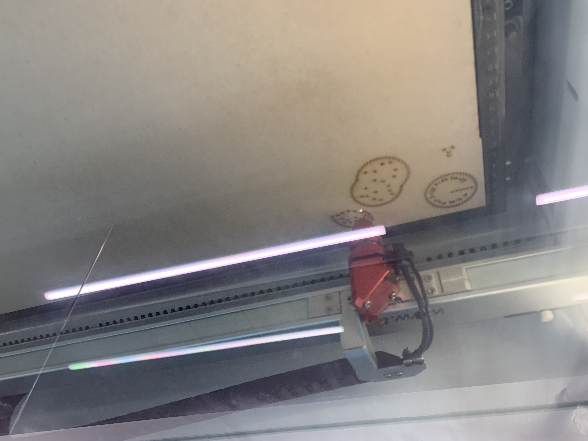

study
ソフトウェア・ネットワーク演習Ⅰ

photoshopを使って
20190508 ソフトウェア・ネットワーク演習Ⅰ
目玉焼きの黄身増えたら面白いかなあって思ったのでとりあえず焼く。
画像編集
失敗 焼き直し 合体


1枚目の失敗してた方がなんか雰囲気良いので、1枚目ベースの画像を作ることにした。
コピースタンプツールで黄身と白身をそれぞれつけて、なるべく自然になるように調整。
アイコン作り
20190510 ソフトウェア・ネットワーク演習Ⅰ
ペンツールを使うのが下手すぎて大苦戦でしたという話。
illustratorを使ってアイコン作り
とりあえずコーヒー飲むことが増えてきたからコーヒーのアイコンにしよ〜て感じで決まる。
イラレ大初心者だったので、岸が手伝ってくれましたありがとう。
arduino
20191016 ソフトウェア・ネットワーク演習Ⅱ
 とりあえずネットで教えてくれている人を参考にする。
とりあえずネットで教えてくれている人を参考にする。
 センサー2個使ったら5vのピン足りないので追加する。
センサー2個使ったら5vのピン足りないので追加する。
 調べたプログラムをつけ足してももちろん全く動かず。
調べたプログラムをつけ足してももちろん全く動かず。
最終これ
白石先生としずほさんに教えてもらったら、いつの間にかほぼやってもらってた。ありがとうございました
Spirograph
20191031 クロステックデザイン演習Ⅲ
レーザーカッターを使ってスピログラフ作り
先生が送ってくれたオリジナルギアデータ(?)をイラレで色々さわったら、

すぐ切ってもらおう！すぐできる！すげー！